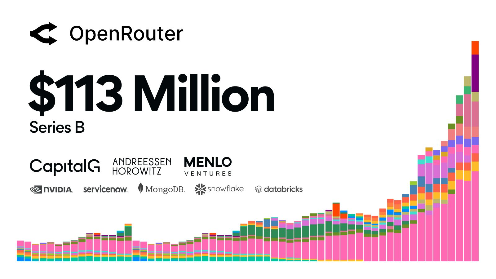
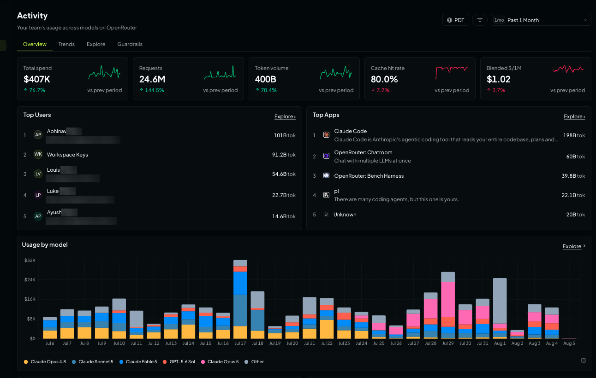

Executive Summary
스트라이프가 오픈라우터를 70억 달러 넘는 값에 사들이는 거래를 확정했다고 블룸버그가 8월 16일 보도했고, 테크크런치가 이를 받아 전했습니다. 오픈라우터는 API 하나로 수백 개 모델에 요청을 나눠 보내는 라우팅 게이트웨이입니다. 석 달 전인 5월에는 13억 달러 평가로 시리즈 B를 받았습니다. 스트라이프는 소문이나 추측에 대해 언급하지 않는다고 답했고, 두 회사 모두 공식 확인은 하지 않았습니다.
값이 왜 그렇게 뛰었는지는 이 회사의 수익 구조가 설명해 줍니다. 오픈라우터는 추론 가격에 마진을 붙이지 않는다고 자사 문서에 명시하고, 대신 크레딧을 충전할 때 5.5%의 수수료를 받습니다. 결제회사가 산 것은 이미 결제 수수료로 돈을 버는 회사였습니다. 두 회사는 인수 보도 전부터 스트라이프 프로젝트라는 도구로 엮여 있었고, 오픈라우터는 그 출시 파트너였습니다.
이 글이 보는 것은 그다음입니다. 게이트웨이는 요청 하나마다 토큰 수와 지연, 어느 공급자가 받았는지를 적어 둡니다. 프롬프트 본문의 저장은 켜고 끌 수 있지만 이 계량 기록은 그렇지 않습니다. 정산이 그 위에서 이뤄지기 때문입니다. 남는 질문은 두 개입니다. 그 기록은 지금 누구의 권리 아래 놓여 있는가, 그리고 모델이나 게이트웨이를 갈아탈 때 기록도 따라오는가.
주요 수치
네 숫자를 나란히 놓으면 이 거래의 성격이 보입니다. 값은 석 달 만에 다섯 배가 됐는데, 그 값을 떠받치는 것은 추론 마진이 아니라 크레딧 충전 수수료와 관문을 지나는 물량입니다. 그 너머에는 공급자 80여 곳이 각자의 정책을 들고 서 있습니다.
출처: TechCrunch (2026-08-16), OpenRouter FAQ, OpenRouter Series B (2026-05-28), OpenRouter 홈페이지
70억 달러+
보도된 인수가
5월 시리즈 B 평가 13억 달러의 약 다섯 배
5.5%
크레딧 충전 수수료
추론 가격에는 마진을 붙이지 않는다고 명시
25조 개
주간 처리 토큰
반년 전 5조에서 다섯 배, 5월 자사 공시
80여 곳
연결된 모델 공급자
보존·학습 정책은 공급자마다 따로 적용
석 달 만에 다섯 배가 된 값
테크크런치가 8월 16일 전한 내용은 짧습니다. 블룸버그 보도를 인용해 스트라이프가 오픈라우터 인수를 확정했다고 적었고, 월스트리트저널이 지난달 두 회사의 인수 협상을 먼저 보도했으며, 이번에 알려진 거래가는 70억 달러가 넘는다고 덧붙였습니다. 스트라이프 대변인은 소문이나 추측에 대해서는 언급하지 않는다고 답했습니다.
오픈라우터는 2023년 초에 최초의 LLM 마켓플레이스를 표방하며 시작한 회사입니다. 개발자가 코드를 고치지 않고도 여러 모델을 갈아탈 수 있도록 단일 API를 제공하고, 작업과 예산에 맞는 모델을 고르도록 돕습니다. 창업자이자 CEO인 알렉스 아탈라는 2017년 NFT 마켓플레이스 오픈시를 공동 창업했던 인물입니다. 그는 5월 시리즈 B 당시 오픈라우터가 AI 세계의 스트라이프에 해당한다고 설명했습니다. 여러 시스템에 대한 단일 접근점을 제공하고 락인을 막아 준다는 이유에서였습니다. 석 달 뒤 그 비유의 원본이 회사를 사게 됐습니다.
5월에 회사가 직접 밝힌 수치는 인수가를 이해하는 데 필요한 배경입니다. 시리즈 B는 1억 1,300만 달러 규모였고 알파벳의 성장 펀드 캐피털G가 주도했습니다. 엔비디아의 벤처 조직 엔벤처스와 서비스나우, 몽고DB, 스노우플레이크, 데이터브릭스의 벤처 조직이 함께 들어왔습니다. 오픈라우터는 같은 글에서 주간 처리량이 반년 만에 5조 토큰에서 25조 토큰으로 늘었고, 올해 1,000조 토큰을 넘겨 처리할 속도라고 적었습니다. 8월 현재 회사 홈페이지가 내건 집계는 월 200조 토큰 이상, 사용자 1,000만 명 이상, 공급자 80여 곳, 모델 500종 이상입니다.

투자자 명단을 다시 보면 이 회사의 성격이 드러납니다. 모델을 만드는 회사가 아니라 모델을 쓰는 회사들이 들어와 있습니다. 오픈라우터 자신도 시리즈 B 글에서 위치를 이렇게 적었습니다. 에이전트와 모델 공급자 사이에 앉아 라우팅과 안정성, 비용 최적화, 컴플라이언스를 처리한다는 것입니다.
결제회사가 라우팅 관문을 사는 이유
모델이 흔해지면 값은 통로로 옮겨 간다는 이야기는 지난 2년 동안 여러 번 나왔습니다. 이번 거래에서 새로운 대목은 그 통로를 결제망이 샀다는 점입니다. 그런데 오픈라우터의 가격 정책을 읽으면 두 회사의 거리가 생각보다 가깝습니다.
오픈라우터의 FAQ는 요금 구조를 이렇게 적어 두었습니다. 하부 모델 공급자의 가격을 그대로 통과시켜 추론 가격에는 마진을 붙이지 않고, 대신 크레딧을 구매할 때 5.5%의 수수료를 받는다는 것입니다. 최소 수수료는 0.8달러이고 암호화폐 결제는 5%, 자체 공급자 키를 쓰는 경우에도 5%가 붙습니다. 게이트웨이의 마진은 토큰당 가격 차이가 아니라 충전 결제에서 나옵니다. 결제회사가 인수 대상으로 고른 회사의 손익계산서는 이미 결제 수수료로 쓰여 있었습니다.
두 회사가 이미 연결돼 있었다는 사실도 오픈라우터 문서에 남아 있습니다. 스트라이프가 운영하는 CLI 기반 개발자 도구 마켓플레이스 스트라이프 프로젝트에서 오픈라우터는 출시 파트너입니다. 명령 한 줄로 오픈라우터 계정을 만들고 API 키를 발급받아 프로젝트의 환경 변수에 넣을 수 있으며, 호스팅과 데이터베이스, AI 비용을 하나의 스트라이프 계정에서 관리한다고 문서는 설명합니다. 키는 스트라이프의 암호화 금고에 보관되고, 코딩 에이전트가 대신 서비스를 붙일 수 있도록 스킬 파일도 프로젝트 폴더에 기록됩니다.

스트라이프 쪽 제품 목록에서도 같은 방향이 보입니다. 현재 스트라이프 사이트의 매출(Revenue) 항목에는 사용량 기반 과금 제품인 메트로놈이 빌링, 인보이싱, 수익 인식과 나란히 올라 있습니다. 개발자 가이드에는 사용량 기반 과금을 제공하는 법과 에이전트로 서비스를 프로비저닝하고 관리하는 법이 함께 놓여 있습니다. 계량과 결제는 이미 한 회사 안에 있고, 이번 보도가 사실이라면 그 앞단의 라우팅 결정이 같은 지붕 아래로 들어옵니다.
아래 표는 세 층이 각각 무엇을 하는지 정리한 것입니다. 스트라이프가 이 조합을 어떤 제품으로 묶을지는 아직 발표된 바 없습니다.
| 층 | 하는 일 | 현재 위치 |
|---|---|---|
| 라우팅 | 어느 공급자의 어느 모델이 이 요청을 받을지 결정 | 오픈라우터 (인수 보도) |
| 계량 | 소비한 토큰과 호출을 세어 청구 가능한 항목으로 변환 | 메트로놈 (스트라이프 제품군) |
| 정산 | 그 항목에 값을 매겨 실제 돈을 옮김 | 스트라이프 빌링·결제 |
출처: OpenRouter, Stripe Projects, Stripe 제품 목록
세 층이 한 회사 안에 모이면 라우팅 로그의 성격이 달라집니다. 지금 그 로그는 어느 모델이 요청을 처리했고 얼마나 걸렸는지를 적어 둔 운영 기록입니다. 계량과 청구가 같은 지붕 아래로 들어오면 같은 기록이 청구서의 근거 자료가 됩니다. 운영 기록이 틀리면 대시보드의 숫자가 어긋나지만, 정산 기록이 틀리면 받거나 낸 돈이 어긋납니다. 그 기록에 무엇이 담기는지는 오픈라우터 자신의 문서에 적혀 있습니다.
요청마다 남는 사용량 원장
오픈라우터의 데이터 수집 문서는 첫 줄에서 프롬프트 보관은 언제나 옵트인이라고 밝힙니다. 회사는 프롬프트와 응답을 저장하지 않으며, 사용자가 두 가지 설정 가운데 하나를 켰을 때만 저장합니다. 하나는 자기 로그에서 프롬프트와 완성을 다시 볼 수 있게 하는 비공개 입출력 로깅이고, 다른 하나는 제품 개선에 데이터를 쓰도록 허용하고 전 모델 사용료에서 1% 할인을 받는 설정입니다. 둘 다 기본값은 꺼짐입니다.
같은 문서의 다음 절이 이 글의 주제입니다. 오픈라우터는 요청마다 메타데이터를 저장한다고 적고 있습니다. 프롬프트와 완성의 토큰 수, 지연 같은 값이며 프롬프트나 응답의 내용은 포함하지 않는다는 설명이 붙습니다. 본문 저장에는 스위치가 있지만 이 계량 기록에는 스위치가 없습니다. 요금 청구가 바로 이 기록 위에서 이뤄지기 때문입니다.
과금 절차는 FAQ에 한 문장으로 적혀 있습니다. 요청을 보내면 오픈라우터가 공급자로부터 처리된 총 토큰 수를 받고, 그 값으로 비용을 계산해 크레딧에서 차감합니다. 숫자는 공급자가 세고, 돈은 게이트웨이가 뺍니다. 그사이에 있는 것이 사용량 원장이고, 정산의 정확도는 그 원장이 얼마나 정확하냐에 걸립니다.
계량 오차가 실제 돈 문제라는 사실은 회사가 만든 보호 장치가 알려 줍니다. 오픈라우터는 응답에 출력 토큰이 없고 종료 사유가 비어 있거나 오류인 경우 과금하지 않는 제로 컴플리션 인슈어런스를 모든 계정에 자동 적용합니다. 하부 공급자가 프롬프트 처리 비용을 청구하더라도 사용자에게는 넘기지 않는다는 조건입니다. 다만 웹 검색이나 PDF 처리처럼 이미 수행된 부가 작업의 비용은 여전히 청구될 수 있습니다.
원장이 얼마나 촘촘한지는 인수 보도 다음 날인 8월 17일에 공개된 제품이 보여 줍니다. 오픈라우터는 액티비티 대시보드와 베타 애널리틱스 API를 내놓으면서, 에이전트별, 모델별, 요청별로 지출을 답해 준다고 소개했습니다. 상단 지표는 총 지출, 요청 수, 토큰량, 캐시 적중률, 100만 토큰당 혼합 단가 다섯 가지입니다. 탐색 화면에서는 최대 두 축까지 골라 묶어 볼 수 있는데, 그 축 목록이 사실상 원장의 스키마입니다.

- 모델, 변형, 공급자
- API 키, 앱, 사용자, 워크스페이스
- 출처, 국가, 데이터 리전
- 종료 사유, 컨텍스트 길이, 세션, 생성 건, 직접 정의한 사용자 ID와 분류기 차원
사용자 단위, 앱 단위, 국가 단위로 토큰과 지출을 갈라 볼 수 있다는 것은, 조직 안에서 누가 어떤 모델을 얼마나 썼는지가 이미 한 곳에 정렬돼 있다는 뜻입니다. 사내 비용 배분에 필요한 자료이면서, 동시에 그 조직의 AI 사용 패턴 자체를 담은 자료이기도 합니다.
그 호출 기록은 누구의 데이터인가
답은 7월 29일자 오픈라우터 이용약관에 나뉘어 적혀 있습니다. 6.1조는 입력의 저작권은 사용자에게 남고, 출력에 대한 권리는 각 모델의 개별 약관이 정한다고 밝힙니다. 사용자는 서비스 운영에 필요한 범위에서 회사에 라이선스를 부여하는데, 이 라이선스에는 양도 가능(transferable)이라는 표현과 재실시권을 줄 수 있다는 표현이 함께 들어 있습니다. 소유주가 바뀌는 국면에서 눈여겨볼 낱말입니다.
프롬프트 로깅을 켜면 조건이 달라집니다. 6.2조는 로깅을 켠 사용자가 전 세계적이고 영구적이며 취소 불가능한 라이선스를 부여한다고 적고, 그 용도를 서비스 제공과 회사 자신의 상업적·사업적 목적이라고 명시합니다. 예시로 든 세 가지는 콘텐츠를 기록하고 저장하는 것, 디버깅 목적으로 입력과 관련 토큰을 복제하고 배포하는 것, 그리고 계정과 연결되지 않는 익명화된 형태로 콘텐츠를 라이선스하거나 판매하는 것입니다.
로깅을 켜지 않아도 남는 조항이 하나 있습니다. 6.5조는 입력 분류에 관한 것으로, 사용자가 익명화된 형태의 입력에 대해 영구적이고 취소 불가능한 라이선스를 부여한다고 적습니다. 용도는 랭킹 페이지처럼 사이트의 이용 지표를 산출하고 공유하는 것으로 한정돼 있고, 분류에 쓰이는 모델은 입력을 저장하거나 기록하지 않으며 로깅을 켜지 않은 경우 분류 후 입력을 보관하지 않는다고 함께 밝히고 있습니다.
여기까지가 게이트웨이 자신의 정책이고, 그 아래에 층이 하나 더 있습니다. 오픈라우터의 공급자 로깅 문서는 계정 설정에서 학습을 거부하면 학습하는 공급자로는 라우팅하지 않는다고 안내하면서, 이 설정이 오픈라우터 자신의 정책과 회사가 프롬프트로 하는 일에는 영향을 주지 않는다고 못 박습니다. 보존 정책은 더 분명합니다. 오픈라우터는 공급자의 데이터 보존 정책에 따라 라우팅 규칙을 바꾸지 않으며, 각 공급자의 약관에 반영된 보존 정책을 표시해 둘 뿐이라고 적혀 있습니다. 자신의 보존 요건에 맞지 않는 공급자를 걸러 내는 일은 사용자의 몫입니다.
강한 통제 수단이 없지는 않습니다. 오픈라우터는 데이터를 보관하지 않는 엔드포인트로만 요청을 보내도록 강제하는 기능을 제공하고, 이를 계정 전체와 모델 그룹별, 가드레일별, 요청 단위로 각각 걸 수 있습니다. 다만 이 강제는 추론 요청의 공급자 라우팅에만 적용되며, 사용자가 켠 플러그인과 도구에는 적용되지 않습니다. 웹 검색처럼 제3자 서비스가 수행하는 기능은 각자의 보존 정책을 따로 확인하라고 문서가 안내합니다.
소유주가 결제회사로 바뀐 뒤 이 문서들이 어떻게 바뀔지는 아직 아무도 발표하지 않았습니다. 확실한 것은 지금 적용되는 규칙이 계약 문서에 적혀 있고, 그 문서를 읽는 일은 인수 발표를 기다리지 않아도 오늘 할 수 있다는 점입니다.
모델을 갈아탈 때 기록은 따라오는가
게이트웨이를 쓰는 이유는 대개 모델을 바꿔도 코드를 고치지 않기 위해서입니다. 모델은 그렇게 바뀝니다. 문제는 그동안 쌓인 호출 기록입니다. 오픈라우터 문서를 보면 기록을 자기 쪽에도 남길 수 있는 경로가 세 갈래로 나와 있고, 셋 다 기본값은 꺼짐입니다.
5.1지금 켜 두어야 하는 스위치
브로드캐스트는 계정이나 조직 단위로 켜면 모든 API 요청의 트레이스를 외부 관측 플랫폼으로 자동 전송하는 기능입니다. 애플리케이션 코드를 손대지 않아도 되고, 현재 지원 목적지에는 S3와 구글 빅쿼리, 스노우플레이크, 클릭하우스, 데이터독, 랭퓨즈, 오픈텔레메트리 컬렉터, 웹훅 등이 올라 있습니다. 원장의 사본을 자기 저장소에 쌓아 두는 가장 직접적인 방법입니다.
입출력 로깅은 성격이 다릅니다. 프롬프트와 완성을 오픈라우터 쪽에 비공개로 저장해 두고 로그 페이지에서 보는 기능이고, 조직 계정에서는 관리자만 열람할 수 있습니다. 보존은 최소 3개월이며 그 이후 보관 여부는 회사 재량이라 삭제하려면 별도로 요청해야 합니다. 유럽과 미국 리전 엔드포인트로 라우팅된 요청에는 적용되지 않는다는 단서도 붙어 있습니다.
라우터 메타데이터는 세 번째 갈래입니다. 오픈라우터의 라우터는 요청마다 공급자를 고르고, 컨텍스트를 압축하기도 하고, 가드레일을 돌리고, 서버 도구를 호출하고, 실패하면 대체 모델로 재시도합니다. 문서는 기본적으로 이 가운데 무엇도 응답에 드러나지 않는다고 적습니다. 요청 헤더를 붙여 옵트인해야 라우터가 실제로 한 일이 응답에 실립니다. 어느 공급자가 이 요청을 처리했는지 확인하려면 그 스위치를 먼저 켜 두어야 한다는 뜻입니다.
5.2도입 검토 자리에서 볼 네 줄
게이트웨이를 고르는 자리에서 오가는 항목은 대개 지원 모델 수, 지연, 좌석당 단가 같은 것들입니다. 이번 거래가 값을 매긴 자산은 그 목록에 없습니다. 같은 자리에서 확인할 항목을 데이터 쪽 언어로 옮기면 네 줄이 됩니다.
- 원장의 사본이 우리 쪽에도 쌓이는가. 트레이스를 자사 저장소로 내보내는 기능이 켜져 있는지, 언제부터의 기록이 남아 있는지
- 라우팅 결정이 기록에 남는가. 어느 공급자가 어느 요청을 처리했는지가 응답과 로그에 남는지, 남기려면 무엇을 켜야 하는지
- 두 층의 정책을 각각 확인했는가. 게이트웨이 약관의 라이선스 조항과 공급자별 보존·학습 정책, 그리고 플러그인과 도구는 그 강제에서 빠진다는 점
- 공급자가 바뀌면 무엇이 달라지는가. 소유 구조나 하부 공급자 목록이 바뀔 때 조건이 자동으로 바뀌는 항목이 무엇인지
네 줄 모두 기능이 아니라 기록의 행선지를 묻습니다. 에이전트가 스스로 결제하는 흐름은 x402 프로토콜을 다룬 글에, 조직의 AI 지출을 성과 지표 옆에 놓고 보는 접근은 리플링의 직원 점수표에 정리해 두었습니다. 두 글 모두 결국 같은 자료를 필요로 합니다. 누가 무엇을 얼마나 호출했는지의 기록입니다.
마지막에 남는 것은 회사 자신이 내건 문장입니다. 오픈라우터 소개 페이지의 첫 문단은 지금도 벤더 락인을 없앤다고 적고 있고, 실제로 모델 전환의 비용을 크게 낮췄습니다. 그런데 전환의 자유는 코드에만 해당합니다. 호출 기록은 관문에 쌓이고, 이번 보도대로라면 그 관문의 주인이 바뀝니다.
Editor's Note: 페블러스가 AI-Ready Data를 말할 때 데이터에 붙어 있어야 한다고 보는 것이 이런 항목입니다. 토큰 수가 맞는지만 확인해서는 그 기록이 어디에 쌓이고 누구의 권리 아래 놓이는지 알 수 없습니다. 소유와 반출 조건이 레코드에 함께 적혀 있어야 나중에 따져 볼 수 있고, 정산의 근거가 되는 원장일수록 그렇습니다.
참고문헌
보도
- 1.Ha, A. (2026-08-16). "Stripe will reportedly acquire AI gateway startup OpenRouter for $7B+." TechCrunch.
오픈라우터 공식 문서
- 2.OpenRouter. (2026-05-28). "OpenRouter Raises $113M Series B." OpenRouter Blog.
- 3.Moberg, C. (2026-08-17). "Understand your AI usage: every agent, model, and request." OpenRouter Blog.
- 4.OpenRouter, Inc. (2026-07-29). "Terms of Service."
- 5.OpenRouter. "Data Collection." OpenRouter Docs.
- 6.OpenRouter. "Provider Logging." OpenRouter Docs.
- 7.OpenRouter. "Zero Data Retention." OpenRouter Docs.
- 8.OpenRouter. "Broadcast." OpenRouter Docs.
- 9.OpenRouter. "Input & Output Logging." OpenRouter Docs.
- 10.OpenRouter. "Router Metadata." OpenRouter Docs.
- 11.OpenRouter. "Zero Completion Insurance." OpenRouter Docs.
- 12.OpenRouter. "Frequently Asked Questions." OpenRouter Docs.
- 13.OpenRouter. "Stripe Projects." OpenRouter Docs.
- 14.OpenRouter. "About OpenRouter." 설립 시점과 자사 집계 지표, 2026-08-18 기준.
스트라이프
- 15.Stripe. "Products." 매출 항목의 Metronome(사용량 기반 과금) 등재 확인, 2026-08-18 기준.
- 16.Stripe. "Stripe Projects." Stripe Docs.